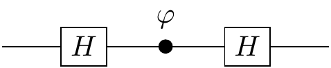
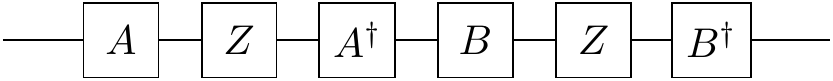

Chapter 3 Logic and geometry with quantum gates
About understanding the square root of \(\texttt{NOT}\) via a physical implementation using symmetric beam-splitters. More about the Bloch sphere, via the omnipresent Pauli matrices, which can be described in a more algebraic way.
Before moving on, we first study two of the subjects from Chapter 2 in more depth: the square root of \(\texttt{NOT}\), and the Bloch sphere.
The goal for the latter is to be able to visualise sequences of unitary operations on a qubit as sequences of rotations, and to see the action of some quantum circuits without getting engaged in lengthy calculations. The goal for the former is to study a way of implementing this gate using physical experiments, and then studying a related construction (the so-called Mach–Zehnder interferometer).
3.1 Physics against logic, via beamsplitters
A symmetric beam-splitter is a cube of glass which reflects half the light that impinges upon it, while allowing the remaining half to pass through unaffected. For our purposes it can be viewed as a device which has two input and two output ports which we label as \(|0\rangle\) and \(|1\rangle\), as in Figure 3.1.
Figure 3.1: A beam-splitter.
When we aim a single photon at such a beam-splitter using one of the input ports, we notice that the photon doesn’t split in two: we can place photo-detectors wherever we like in the apparatus, fire in a photon, and verify that if any of the photo-detectors registers a hit, none of the others do. In particular, if we place a photo-detector behind the beam-splitter in each of the two possible exit beams, the photon is detected with equal probability at either detector, no matter whether the photon was initially fired from input port \(|0\rangle\) or \(|1\rangle\).
It may seem obvious that, at the very least, the photon is either in the transmitted beam \(|0\rangle\) or in the reflected beam \(|1\rangle\) during any one run of this experiment. Thus we may be tempted to think of the beam-splitter as a random binary switch which, with equal probability, transforms any binary input into one of the two possible outputs. However, that is not necessarily the case. Let us introduce a second beam-splitter and place two normal mirrors so that both paths intersect at the second beam-splitter, resulting in something resembling the Mach-Zehnder interferometer (see 3.2).

Figure 3.2: Two beam-splitters with mirrors, so that a photon travels through both.
Now, the axiom of additivity in probability theory says that whenever something can happen in several alternative ways we add probabilities for each way considered separately. We might argue that a photon fired into the input port \(|0\rangle\) can reach the detector \(0\) in two mutually exclusive ways: either by two consecutive reflections or by two consecutive transmissions. Each reflection happens with probability \(1/2\) and each transmission happens with probability \(1/2\) thus the total probability of reaching detector 0 is a sum of the probability of the two consecutive reflections (\(1/2\times 1/2 = 1/4\)) and the probability of the two consecutive transmissions (\(1/2\times 1/2 = 1/4\)) which gives probability \(1/2\). This is summarised in 3.3, and makes perfect sense — a random switch followed by a random switch should give nothing else but a random switch. However, if we set up such an experiment, that is not what happens!
There is no reason why probability theory or any other a priori mathematical construct should make any meaningful statements about outcomes of physical experiments.

Figure 3.3: The two possible classical scenarios. Note that this is not what actually happens in the real physical world!
In experimental reality, when the optical paths between the two beam-splitters are the same, the photon fired from input port \(|0\rangle\) always strikes detector 1 and never detector 0 (and the photon fired from input port \(|1\rangle\) always strikes detector 0 and never detector 1). Thus a beam-splitter acts as the square root of \(\texttt{NOT}\) gate.
The action of the beam-splitter — in fact, the action of any quantum device — can be described by tabulating the amplitudes of transitions between its input and output ports.44 \[\begin{equation} B = \begin{bmatrix} B_{00} & B_{01}\\ B_{10} & B_{11} \end{bmatrix} = \begin{bmatrix} \frac{1}{\sqrt 2} & \frac{i}{\sqrt 2}\\ \frac{i}{\sqrt 2} & \frac{1}{\sqrt 2} \end{bmatrix}. \tag{3.1} \end{equation}\] The matrix element \(B_{lk}\), where \(k,l=0,1\), represents the amplitude of transition from input \(|k\rangle\) to output \(|l\rangle\) (watch the order of indices). Each reflection (entries \(B_{01}\) and \(B_{10}\)) happens with amplitude \(i/\sqrt{2}\) and each transmission (entries \(B_{00}\) and \(B_{11}\)) happens with amplitude \(1/\sqrt{2}\). Thus the total amplitude that a photon fired from input port \(|0\rangle\) will reach detector \(0\) is the sum of the amplitude of the two consecutive reflections (\(i/\sqrt{2}\times i/{\sqrt 2} = -1/2\)) and the amplitude of the two consecutive transmissions (\(1/{\sqrt 2}\times 1/{\sqrt 2} = 1/2\)) which gives the total amplitude \(0\). The resulting probability is then zero. Unlike probabilities, amplitudes can cancel out each other out. We can now go on and calculate the amplitude that the photon will reach detector \(1\). In this case we will get \(i\), which gives probability \(1\). We can then switch to input \(|1\rangle\) and repeat our calculations. All possible paths and associated amplitudes are shown in 3.4.

Figure 3.4: All possible transitions and their amplitudes when we compose two beam-splitters \(B\).
However, instead of going through all the paths in this diagram and linking specific inputs to specific outputs, we can simply multiply the transition matrices: \[ BB = \begin{bmatrix} \frac{1}{\sqrt 2} & \frac{i}{\sqrt 2}\\ \frac{i}{\sqrt 2} & \frac{1}{\sqrt 2} \end{bmatrix} \begin{bmatrix} \frac{1}{\sqrt 2} & \frac{i}{\sqrt 2}\\ \frac{i}{\sqrt 2} & \frac{1}{\sqrt 2} \end{bmatrix} = \begin{bmatrix} 0 & i\\ i & 0 \end{bmatrix} = iX \] where \(X=\begin{bmatrix}0&1\\1&0\end{bmatrix}\) is the \(\texttt{NOT}\) operator.
Recalling The square root of NOT, we see that beam-splitters give a physical way of constructing the square root of \(\texttt{NOT}\).
| \(\texttt{NOT}\) | \(\sqrt{\texttt{NOT}}\) |
|---|---|
| \(X = \begin{bmatrix}0&1\\1&0\end{bmatrix}\) | \(B = \frac{1}{\sqrt2}\begin{bmatrix}1&i\\i&1\end{bmatrix}\) |
| bit flip | beam-splitter |
3.2 Quantum interference revisited (still about beam-splitters)
One of the simplest quantum devices in which quantum interference can be controlled is a Mach–Zehnder interferometer — see Figure 3.5.

Figure 3.5: The Mach-Zehnder interferometer, with the input photon represented by the coloured dot. This experimental set-up is named after the physicists Ludwig Mach and Ludwig Zehnder, who proposed it back in 1890s.
It consists of two beam-splitters (the square boxes, bottom left and top right) and two slivers of glass of different thickness which are inserted into each of the optical paths connecting the two beam-splitters. The slivers are usually referred to as “phase shifters” and their thicknesses, \(\varphi_0\) and \(\varphi_1\), are measured in units of the photon’s wavelength multiplied by \(2\pi\). The two inputs ports of the interferometer are labelled as \(|0\rangle\) and \(|1\rangle\), and each of the two output ports, also labelled as \(0\) and \(1\), terminates in a photodetector.45
A photon (the coloured dot in the figure) impinges on the first beam-splitter from one of the two input ports (here input 1) and begins its journey towards one of the two photodetectors. Let46 \(U_{ij}\) denote the probability amplitude that the photon initially in input port \(j=0,1\) ends up in detector \(i=0,1\). At each of the two beam-splitters the photon is transmitted with the probability amplitude \(\sqrt{T}\) and reflected with the probability amplitude \(i\sqrt{R}\), with \(R+T=1\), and the two phase shifters modify the amplitudes by phase factors \(e^{i\varphi_0}\) and \(e^{i\varphi_1}\), respectively. In quantum theory we almost always start with the amplitudes, and once we have a full expression for the amplitude of a given outcome we square its absolute value to get the corresponding probability. For example, let us calculate \(U_{00}\).
We notice that there are two alternative ways for the photon in the input port \(0\) to end up in the output port \(0\). It can take the lower path, through the phase shifter \(\varphi_0\), or the upper path, through the phase shifter \(\varphi_1\). The lower path implies two consecutive transmissions at the beam-splitters and the phase factor \(e^{i\varphi_0}\), whereas the upper path implies two consecutive reflections and the phase factor \(e^{i\varphi_1}\). Once the photon ends in the output port \(0\) there is no way of knowing which path was taken, thus we add the amplitudes pertaining to each path. The resulting amplitude is \[ U_{00} = \sqrt{T} e^{i\varphi_0} \sqrt{T} + i\sqrt{R} e^{i\varphi_1} i \sqrt{R}, \] and the corresponding probability \(P_{00}=|U_{00}|^2\) reads \[ \begin{aligned} P_{00} & = \left\vert \sqrt{T}e^{i\varphi_0}\sqrt{T} + i\sqrt{R}e^{i\varphi_1}i\sqrt{R} \right\vert^2 = \left\vert Te^{i\varphi_0} - Re^{i\varphi_1} \right\vert^2 \\& = T^2 + R^2 - 2TR\cos(\varphi_1-\varphi_0). \end{aligned} \]
The “classical” part of this expression, \(T^2+R^2\), basically says that the photon undergoes either two consecutive transmissions with probability \(T^2\), or two consecutive reflections with probability \(R^2\). The probability of being transmitted through any phase shifter is always \(1\), hence the phase shifters play no role in the classical description of this process. But the classical description is not correct, as the experiments show, whence the interference term \(2TR\cos(\varphi_1-\varphi_0)\) in which the phase shifters play the essential role. Depending on the relative phase \(\varphi=\varphi_1-\varphi_0\) the probability that the detector \(0\) “clicks” can vary from \((T-R)^2\), for \(\varphi=0\), to \(1\), for \(\varphi=\pi\).

If we do not care about the experimental details, we can represent the action of the Mach–Zehnder interferometer in terms of a diagram: see 3.6.

Figure 3.6: The Mach-Zehnder interferometer represented as an abstract diagram.
Here we can follow, from left to right, the multiple different paths that a photon can take in between specific input and output ports. The amplitude along any given path is just the product of the amplitudes pertaining to the path segments (Rule 1), while the overall amplitude is the sum of the amplitudes for the many different paths (Rule 2). You can, for example, see that the probability amplitude \(U_{10}\) is given by \[ U_{10} = \sqrt{T}e^{i\varphi_0}i\sqrt{R} + i\sqrt{R}e^{i\varphi_1}\sqrt{T} \] and the corresponding probability is \[ \begin{aligned} P_{10} & = \left\vert \sqrt{T}e^{i\varphi_0}i\sqrt{R} + i\sqrt{R}e^{i\varphi_1}\sqrt{T} \right\vert^2 \\& = 2RT + 2RT\cos(\varphi_1-\varphi_0). \end{aligned} \] Again, the first term is of “classical” origin and represents probabilities corresponding to each path: one reflection followed by one transmission plus one transmission followed by one reflection, that is, \(RT+TR=2RT\). The second term is the interference term. Clearly, the photon entering port \(1\) will end up in one of the two detectors, hence, \[ P_{00} + P_{10} = R^2 + 2RT + T^2 = (T+R)^2 = 1. \] The action of the interferometer is thus fully described47 by the four probability amplitudes \(U_{ij}\) (\(i,j=0,1\)). The most popular instance of a Mach–Zehnder interferometer involves only symmetric beam-splitters \((R=T=\frac12)\) and is fully described by the matrix \[ U = \begin{bmatrix} -\sin\varphi/2 & \cos\varphi/2 \\\cos\varphi/2 & \sin\varphi/2 \end{bmatrix} \] where \(\varphi=\varphi_1-\varphi_0\). In fact, when you do all the calculations you obtain \(ie^{i\frac{\varphi_0+\varphi_1}{2}}U\) rather than \(U\), but the global phase factor \(ie^{i\frac{\varphi_0+\varphi_1}{2}}\) is common to all the amplitudes in the matrix and as such it does not contribute to the resulting probabilities.48
3.3 The Pauli matrices, algebraically
Matrices form a vector space: you can add them, and you can multiply them by a scalar. One possible choice of a basis in the vector space of \((2\times 2)\) matrices is the set of matrices \(\{M_{00},M_{01},M_{10},M_{11}\}\), where the entries of \(M_{ij}\) are all \(0\) except for the \(ij\)-th entry, which is \(1\) (e.g. \(M_{01}=\begin{bmatrix}0&1\\0&0\end{bmatrix}\)). However, it turns out that there is a different basis which offers lots of insights into the structure of the general single-qubit unitary transformations, namely \(\{\mathbf{1},X,Y,Z\}\), i.e. the identity matrix and the three Pauli matrices.
| \(\mathbf{1}\) | \(X=\sigma_x\) | \(Y=\sigma_y\) | \(Z=\sigma_z\) |
|---|---|---|---|
| \(\begin{bmatrix}1&0\\0&1\end{bmatrix}\) | \(\begin{bmatrix}0&1\\1&0\end{bmatrix}\) | \(\begin{bmatrix}0&-i\\i&0\end{bmatrix}\) | \(\begin{bmatrix}1&0\\1&-1\end{bmatrix}\) |
Recalling Pauli operators, we know that the Pauli operators (as well as the identity operator) are unitary and Hermitian, square to the identity, and anti-commute.
Any \((2\times 2)\) complex matrix \(A\) has a unique expansion in the form \[\begin{equation} \begin{aligned} A &= \begin{bmatrix} a_0 + a_z & a_x - i a_y \\a_x +i a_y & a_0 - a_z \end{bmatrix} \\&= a_0\mathbf{1}+ a_x \sigma_x + a_y \sigma_y + a_z \sigma_z \\&= a_0\mathbf{1}+ \vec{a}\cdot\vec{\sigma}. \end{aligned} \tag{3.2} \end{equation}\] for some complex numbers \(a_0\), \(a_x\), \(a_y\), and \(a_z\). Here, \(\vec{a}\) is a vector with three complex components \((a_x, a_y, a_z)\), and \(\vec{\sigma}\) represents the “vector” of Pauli matrices \((\sigma_x,\sigma_y,\sigma_z)\). The algebraic properties of the Pauli matrices can be neatly compacted (see the exercises) into a single expression:
The multiplication rule: \[ (\vec{a}\cdot\vec{\sigma})\,(\vec{b}\cdot\vec{\sigma}) = (\vec{a}\cdot\vec{b})\,\mathbf{1}+ i(\vec{a}\times \vec{b})\cdot\vec{\sigma}. \]
We also introduce the inner product of two matrices:
The Hilbert–Schmidt product: \[ (A|B) = \frac12 \operatorname{tr}A^\dagger B. \]
Recall that the trace of a square matrix \(A\), denoted by \(\operatorname{tr}A\), is defined to be the sum of the elements on the main diagonal of \(A\), and defines a linear mapping: for any scalars \(\alpha\) and \(\beta\), \[ \operatorname{tr}(\alpha A+\beta B) = \alpha\operatorname{tr}A +\beta\operatorname{tr}B. \] Moreover, the trace is invariant under cyclic permutations: e.g. \[ \operatorname{tr}(ABC) = \operatorname{tr}(BCA) = \operatorname{tr}(CAB). \] Note, however, that this does not imply that e.g. \(\operatorname{tr}(ABC)=\operatorname{tr}(ACB)\).
3.3.1 Exercises
Show that \(\{\mathbf{1},\sigma_x,\sigma_y,\sigma_z\}\) is an orthonormal basis with respect to the Hilbert-Schmidt product in the space of complex \((2\times 2)\) matrices.
Show that the coefficients \(a_k\) (for \(k=x,y,z\)) in Equation (3.2) are given by the inner product \(a_k = (\sigma_k|A) = \frac12\operatorname{tr}\sigma_k A\).
Show that \(\frac12\operatorname{tr}(\vec{a}\cdot\vec{\sigma})(\vec{b}\cdot\vec{\sigma}) = \vec{a}\cdot\vec{b}\).
Show that any \(\vec{n}\cdot\vec{\sigma}\) has eigenvalues are \(\pm|\vec{n}|\).
Show that, if \(\vec{n}\cdot\vec{m}=0\), then the operators \(\vec{n}\cdot\vec{\sigma}\) and \(\vec{m}\cdot\vec{\sigma}\) anticommute.
In these notes, we usually deal with matrices that are Hermitian (\(A=A^\dagger\)) or unitary (\(AA^\dagger=\mathbf{1}\)). It is easy to see that, if \(A\) is Hermitian, then \(a_0\) and the three components of \(\vec{a}\) are all real. The \((2\times 2)\) unitaries are usually parametrised as \[ U = e^{i\gamma}\Big(u_0\mathbf{1}+ i(u_x\sigma_x + u_y\sigma_y + u_z\sigma_z)\Big) \] where \(e^{i\gamma}\) is an overall multiplicative phase factor, with \(\gamma\) real, and \(u_0\) and the three components \(u_x\), \(u_y\), \(u_z\) are all real numbers.
Show that the unitarity condition implies that \[ u_0^2 + u_x^2 + u_y^2 + u_z^2 = 1, \] and show that the determinant of \(U\) is \(e^{i2\gamma}\) using this parametrisation.
3.4 The Pauli matrices, geometrically
Geometrically speaking, the group of unitaries \(\mathrm{U}(2)\) is a three-dimensional sphere \(S^3\) in \(\mathbb{R}^4\). We often fix the determinant to be \(+1\) and express \((2\times 2)\) unitaries as \[ U = u_0\mathbf{1}+ i(u_x\sigma_x + u_y\sigma_y + u_z\sigma_z). \] Such matrices form a popular subgroup of \(\mathrm{U}(2)\); it is called the special (meaning the determinant is equal to \(1\)) unitary group, and denoted by \(\mathrm{SU}(2)\). In quantum theory, any two unitary matrices that differ by some global multiplicative phase factor represent the same physical operation, so we are “allowed to” fix the determinant to be \(+1\), and thus restrict ourselves to considering matrices in \(\mathrm{SU}(2)\). This is a sensible approach, practised by many theoretical physicists, but again, for some historical reasons, the convention in quantum information science does not follow this approach. For example, phase gates are usually written as \[ P_\alpha = \begin{bmatrix}1&0\\0&e^{i\alpha}\end{bmatrix} \] rather than \[ P_\alpha = \begin{bmatrix}e^{-i\frac{\alpha}{2}}&0\\0&e^{\,i\frac{\alpha}{2}}\end{bmatrix} \] Still, sometimes the \(T\) gate \[ T = \begin{bmatrix}1&0\\0&e^{i\pi/4}\end{bmatrix} = \begin{bmatrix}e^{-i\pi/8}&0\\0&e^{i\pi/8}\end{bmatrix} \] is called the \(\pi/8\) gate, because of its \(\mathrm{SU}(2)\) form.
Let us write any \((2\times 2)\) unitary, up to an overall phase factor, as \[ U = u_0\mathbf{1}+ i(u_x \sigma_x + u_y \sigma_y + u_z \sigma_z) = u_0\mathbf{1}+ i{\vec{u}}\cdot{\vec{\sigma}} \] where \(u_0^2+|\vec{u}|^2=1\). This additional unitarity restriction allows us to parametrise \(u_0\) and \(\vec{u}\) in terms of a real unit vector \(\vec{n}\), parallel to \(\vec{u}\), and a real angle \(\theta\) so that49 \[ U = (\cos\theta)\mathbf{1}+ (i\sin\theta){\vec{n}}\cdot{\vec{\sigma}}. \] An alternative way of writing this expression is \[ U = e^{i\theta {\vec{n}}\cdot{\vec{\sigma}}}, \] as follows from the power-series expansion of the exponential. Indeed, any unitary matrix can always be written in the exponential form as \[ \begin{aligned} e^{iA} &\equiv \mathbf{1}+ iA + \frac{(i A)^2}{1\cdot 2} + \frac{(i A)^3}{1\cdot 2\cdot 3} \ldots \\&= \sum_{n=0}^\infty \frac{(i A)^n}{n!} \end{aligned} \] where \(A\) is a Hermitian matrix.
Writing unitary matrices in the form \(e^{iA}\) is analogous to writing complex numbers of unit modulus as \(e^{i\alpha}\) (the so-called polar form).
3.4.1 Exercises
- Show that, if \(A^2=\mathbf{1}\), then we can turn the power series expansion into a simple expression: for any real \(\alpha\), \[ e^{i\alpha A} = (\cos\alpha)\mathbf{1}+ (i\sin\alpha)A. \]
- Using the previous exercise, or otherwise, show that any \((2\times 2)\) unitary matrix \(U\) can be written, up to an overall multiplicative phase factor, as \[ U = e^{i \theta \vec{n}\cdot\vec{\sigma}} = (\cos\theta)\mathbf{1}+ (i\sin\theta)\vec{n}\cdot\vec{\sigma}. \] (The argument here is the same as the argument that \(e^{i\theta}=\cos\theta +i\sin\theta\)).
3.5 Unitaries as rotations
Here comes a remarkable connection between two-dimensional unitary matrices and ordinary three-dimensional rotations.
The unitary \(U = e^{i\theta \vec{n}\cdot\vec{\sigma}}\) represents a clockwise rotation through the angle \(2\theta\) about the axis defined by \(\vec{n}\).
(N.B. \(2\theta\), not \(\theta\)).
For example, \[ \begin{aligned} e^{i\theta\sigma_x} &= \begin{bmatrix} \cos\theta & i\sin\theta \\i\sin\theta & \cos\theta \end{bmatrix} \\e^{i\theta\sigma_y} &= \begin{bmatrix} \cos\theta & \sin\theta \\-\sin\theta & \cos\theta \end{bmatrix} \\e^{i\theta\sigma_z} &= \begin{bmatrix}e^{i\theta}&0\\0&e^{-i\theta}\end{bmatrix} \end{aligned} \] represent rotations by \(2\theta\) about the \(x\)-, \(y\)- and \(z\)-axis, respectively.

Figure 3.7: \(e^{i\theta\vec{n}\cdot\vec{\sigma}}\) rotates the vector \(\vec{s}\) about \(\vec{n}\) by angle \(2\theta\), sending it to a point on the blue circle, whose centre is passed through by \(\vec{n}\).
The Hadamard gate \[ \begin{aligned} H &= \frac{1}{\sqrt 2} \begin{bmatrix} 1& 1 \\1 & -1 \end{bmatrix} \\&= \frac{1}{\sqrt 2}(\sigma_x + \sigma_z) \\&= (-i)e^{i \frac{\pi}{2} \frac{1}{\sqrt 2}(\sigma_x+\sigma_z)} \end{aligned} \] (which, up to the overall multiplicative phase factor of \(-i\), is equal to \(e^{i \frac{\pi}{2} \frac{1}{\sqrt 2}(\sigma_x+\sigma_z)}\)) represents rotation about the diagonal \((x+z)\)-axis through the angle \(\pi\).
In somewhat abstract terms, we make the connection between unitaries and rotations by looking how the unitary group \(\mathrm{U}(2)\) acts on the three-dimensional Euclidian space of \((2\times 2)\) Hermitian matrices with zero trace. All such matrices \(S\) can be written as \(S=\vec{s}\cdot\vec{\sigma}\) for some real \(\vec{s}\), i.e. each matrix is represented by a Euclidean vector \(\vec{s}\) in \(\mathbb{R}^3\). Now, \(U\in \mathrm{U}(2)\) acts on the Euclidean space of such matrices by \(S\mapsto S' = USU^\dagger\), i.e. \[\begin{equation} \vec{s}\cdot\vec{\sigma} \mapsto \vec{s'}\cdot\vec{\sigma} = U(\vec{s}\cdot\vec{\sigma})U^\dagger \tag{3.3} \end{equation}\] This is a linear map \(\mathbb{R}^3\to\mathbb{R}^3\), and is thus given by some \((3\times 3)\) real-valued matrix \(R\). We note that this map is an isometry (a distance preserving operation), since it preserves the scalar product in the Euclidean space: for any two vectors \(\vec{s}\) and \(\vec{v}\), \[ \begin{aligned} \vec{s'}\cdot\vec{v'} &= \frac12\operatorname{tr}[S'V'] \\&= \frac12\operatorname{tr}[(USU^\dagger)(UVU^\dagger)] \\&= \frac12\operatorname{tr}[SV] \\&= \vec{s}\cdot\vec{v} \end{aligned} \] (where \(S=\vec{s}\cdot\vec{\sigma}\) and \(V=\vec{v}\cdot\vec{\sigma}\)), using the cyclic property of the trace. This means that matrix \(R\) is orthogonal.50 Furthermore, we can show51 that \(\det R=1\). The only isometries in three dimensional Euclidian space, which are described by orthogonal matrices \(R\) with \(\det R=1\), are rotations. Thus, in the mathematical lingo, we have established a homomorphism52 between \(\mathrm{U}(2)\) and \(\mathrm{SO}(3)\), where \(\mathrm{SO}(3)\) stands for the special orthogonal group in three dimensions (the group of all rotations about the origin of three-dimensional Euclidean space \(\mathbb{R}^3\) under the operation of composition). It is quite clear from Equation (3.3) that unitary matrices differing only by a global multiplicative phase factor (e.g. \(U\) and \(e^{i\gamma}U\)) represent the same rotation.
Physicists, however, usually prefer a more direct demonstration, which goes roughly like this. Consider the map \(\vec{s} \mapsto \vec{s'}\) induced by \(U=e^{i \alpha \vec{n}\cdot\vec{\sigma}}\). For small values of \(\alpha\), we can write \[ \begin{aligned} \vec{s'}\cdot\vec{\sigma} &= U(\vec{s}\cdot\vec{\sigma}) U^\dagger \\&= \Big( \mathbf{1}+i\alpha (\vec{n}\cdot\vec{\sigma})+\ldots \Big) (\vec{s}\cdot\vec{\sigma}) \Big( \mathbf{1}- i\alpha(\vec{n}\cdot\vec{\sigma})+\ldots \Big). \end{aligned} \] To the first order in \(\alpha\), this gives \[ \vec{s'} \cdot\vec{\sigma} = \Big( \vec{s} + 2\alpha (\vec{n}\times\vec{s}) \Big) \cdot \vec{\sigma} \] that is, \[ \vec{s'} = \vec{s} + 2\alpha(\vec{n}\times\vec{s}) \] which we recognise as a good old textbook formula for an infinitesimal clockwise rotation of \(\vec{s}\) about the axis \(\vec{n}\) through the angle \(2\alpha\).
3.5.1 Exercises
In some of these exercises, we continue to study the \((3\times 3)\) real-valued matrix \(R\) described above.
- Show that \(\operatorname{tr}\sigma_x\sigma_y\sigma_z = 2i\).
- Consider \[ U(\vec e_k\cdot\sigma_k)U^\dagger=U\sigma_kU^\dagger={\vec f_k}\cdot\vec\sigma. \] So \(U\) maps the unit vectors \(\vec e_x\), \(\vec e_y\), and \(\vec z_z\), (along the \(x\)-, \(y\)-, and \(z\)-axis, respectively), to new unit vectors \(\vec f_x\), \(\vec f_y\), and \(\vec f_z\). We already know that, in Euclidean space, this transformation is described by a \((3\times 3)\) orthogonal matrix \(R\). How are the three vectors \(\vec f_x\), \(\vec f_y\), and \(\vec f_z\) related to the entries in matrix \(R\)?
- Show that \[ \begin{aligned} \operatorname{tr}\sigma_x\sigma_y\sigma_z &= \operatorname{tr}({\vec f_x}\cdot\vec\sigma)( {\vec f_y}\cdot\vec\sigma)({\vec f_z}\cdot\vec\sigma) \\&= 2i\det R \end{aligned} \] (which implies that \(\det R=1\)).
- Make use of the orthonormality of the Pauli basis and Equation (3.3) to show that the elements of the matrix \(R\) can be expressed in terms of those of the matrix \(U\), in the form \[ R_{ij}=\frac12\operatorname{tr}\left(\sigma_i U\sigma_j U^\dagger\right). \] Here, \(i\) and \(j\) take values in \(\{1,2,3\}\), and \(\sigma_1\equiv\sigma_x\), \(\sigma_2\equiv\sigma_y\), \(\sigma_3\equiv\sigma_z\).
- Show that the phase gate \(P_\varphi =\begin{bmatrix}1&0\\0&e^{i\varphi}\end{bmatrix}\) represents an anticlockwise rotation about the \(z\)-axis through the angle \(\varphi\). Note that it might be helpful to start with the \(\mathrm{SU}(2)\) version of the phase gate: \[ \begin{aligned} P_\varphi &= e^{-i\frac{\varphi}{2}\sigma_z} \\&= \begin{bmatrix} e^{-i \frac{\varphi}{2}}& 0 \\0 & e^{i \frac{\varphi}{2}} \end{bmatrix} \quad\longrightarrow\quad R \\&= \begin{bmatrix} \cos \varphi & -\sin \varphi & 0 \\\sin \varphi & \cos \varphi & 0 \\0 & 0 & 1 \end{bmatrix} \end{aligned} \]
- Express the Hadamard gate \(H\) in terms of \(\vec{n}\cdot\vec{\sigma}\), and demonstrate that \[ \begin{aligned} HZH&=X \\HXH&=Z \\HYH&=-Y. \end{aligned} \]
- Show that the Hadamard gate \(H\) turns rotations about the \(x\)-axis into rotations about the \(z\)-axis, and vice versa. That is, \[ \begin{aligned} H \left( e^{-i\frac{\varphi}{2}Z} \right) H &= e^{-i\frac{\varphi}{2}X} \qquad \mbox{and} \qquad H \left( e^{-i\frac{\varphi}{2}X} \right) H \\&= e^{-i\frac{\varphi}{2}Z}. \end{aligned} \]
3.6 Universality, again
Although this may all seem tediously abstract, it is surprisingly useful. Take another look at the single qubit interference circuit

and the corresponding sequence of unitary operations \[ \begin{aligned} H \left( e^{-i\frac{\varphi}{2}Z} \right) H &= e^{-i\frac{\varphi}{2}X} \\&= \begin{bmatrix} \cos\varphi/2 & -i\sin\varphi/2 \\-i\sin\varphi/2 & \cos\varphi/2 \end{bmatrix} \end{aligned} \]
The single qubit interference circuit has a simple geometrical meaning: it shows how a rotation about the \(z\)-axis, induced by the phase gate \(P_\varphi\), is turned, by the two Hadamard gates, into a rotation about the \(x\)-axis.
Now, take a look at this circuit:

What does it represent? The central part is a rotation by \(\varphi\) about the \(x\)-axis, but is it is sandwiched between two rotations about the \(z\)-axis. Now we have to appeal to your knowledge of classical mechanics: you may recall that any rotation in the Euclidean space can be performed as a sequence of three rotations: one about \(z\)-axis, one about \(x\)-axis, and one more about the \(z\)-axis. In this context, this implies that any unitary \(U\), up to a global phase factor, can be written as \[ \begin{aligned} U(\alpha, \beta, \varphi) &= e^{-i\frac{\beta}{2}Z} e^{-i\frac{\varphi}{2}X} e^{-i\frac{\alpha}{2}Z} \\&= \begin{bmatrix} e^{-i\left(\frac{\alpha+\beta}{2}\right)}\cos\frac{\varphi}{2} & ie^{i\left(\frac{\alpha-\beta}{2}\right)}\sin\frac\varphi{2} \\ie^{-i\left(\frac{\alpha-\beta}{2}\right)}\sin\frac\varphi{2} & e^{i\left(\frac{\alpha+\beta}{2}\right)}\cos\frac\varphi{2} \end{bmatrix}. \end{aligned} \]
Thus once you are given a couple of Hadamard gates and an infinite supply of phase gates, so that you can choose the three phases you need, you can construct an arbitrary unitary operation on a single qubit. Needless to say, the two axes in question, \(z\) and \(x\), do not have any special status, geometrically speaking — if we have rotations about any two orthogonal53 axes then we can create any one-qubit unitary that we want.

Figure 3.8: If we can move along the two families of circles, then from any point on the sphere we can reach any other point. The two axes do not even have to be orthogonal: any two different axes will do. Can you see why?
Consider the following circuit:

where both \(A\) and \(B\) are unitary operations. We claim that any unitary \(U\) can be represented in this form.
Again, we can prove this geometrically. The circuit represents two rotations by \(180^\circ\) about two axes obtained by rotating the \(z\)-axis with unitaries \(A\) and \(B\), respectively. Any rotation in the three-dimensional space is the composition of two rotations by \(180^\circ\), as shown in Figure 3.9. The resulting axis of rotation is perpendicular to the two axes about which rotations by \(180^\circ\) are performed, and the angle of the composed rotation is twice the angle between the two axes.
Figure 3.9: Rotating by \(\alpha\) around the \(z\)-axis is the same as the composition of two rotations by \(180^\circ\) around axes which both lie in the \(xy\)-plane, with angle \(\alpha/2\) between them.
3.6.1 Exercises
- In the Singapore Botanic Gardens, there is a sculpture by Ueli Fausch called “Swiss Granite Fountain”. It is a spherical granite ball which measures 80cm in diameter and weighs 700kg, and is kept afloat by strong water pressure directed through the basal block. It is easy to set the ball in motion, and it keeps rotating in whatever way you start for a long time. Suppose you are given access to this ball only near the top, so that you can push it to make it rotate around any horizontal axis, but you don’t have enough of a grip to make it turn around the vertical axis. Can you make it rotate around the vertical axis anyway?
3.7 Some quantum dynamics
The time evolution of a quantum state is a unitary process which is generated by a Hermitian operator called the Hamiltonian, which we also54 denote by \(H\). The Hamiltonian contains a complete specification of all interactions within the system under consideration. In an isolated system, the state vector \(|\psi(t)\rangle\) changes smoothly in time according to the Schrödinger equation: \[ \frac{\mathrm{d}}{\mathrm{d}t} |\psi(t)\rangle =-\frac{i}{\hbar} H |\psi(t)\rangle. \] For time independent Hamiltonians55, the formal solution of this reads56 \[ \begin{gathered} |\psi(t)\rangle = U(t)|\psi(0)\rangle \\\quad\mbox{where}\quad U(t) = e^{-\frac{i}{\hbar}Ht}. \end{gathered} \]
Now, to relate this to the earlier parts of this chapter, we note that the Hamiltonian of a qubit can always be written in the form \(H = E_0\mathbf{1}+\omega(\vec{n}\cdot\vec{\sigma})\), hence \[ \begin{aligned} U(t) &= e^{-i\omega t \vec n\cdot\vec\sigma} \\&= (\cos\omega t)\mathbf{1}- (i\sin\omega t)\vec{n}\cdot\vec{\sigma} \end{aligned} \] which is a rotation with angular frequency \(\omega\) about the axis defined by the unit vector \(\vec n\).
!!!TODO!!! the \(4\pi\) world of qubits
3.7.1 Exercises
- A qubit (spin one-half particle) initially in state \(|0\rangle\) (spin up) is placed in a uniform magnetic field. The interaction between the field and the qubit is described by the Hamiltonian \[ H = \omega \begin{bmatrix} 0 & - i \\i & 0 \end{bmatrix} \] where \(\omega\) is proportional to the strength of the field.57 What is the state of the qubit after time \(t=\pi/4\omega\)?
Note that gate \(B\) is not the same square root of \(\texttt{NOT}\) as the one described in the first diagram in this section. There are infinitely many ways of implementing this “impossible” logical operation.↩︎
The two diagonal objects in the top-left and bottom-right corners of 3.5 are simply mirrors to make the two possible paths meet at the second beam-splitter.↩︎
We will often use \(i\) as an index even though it is also used for the imaginary unit. Hopefully, no confusion will arise for it should be clear from the context which one is which.↩︎
In general, any isolated quantum device, including a quantum computer, can be described by a matrix of probability amplitudes \(U_{ij}\) that input \(j\) generates output \(i\). Watch the order of indices.↩︎
Why is this? Hint: think about the eigenvalues of a matrix \(A\) and of the matrix \(\mu A\), where \(\mu\) is a complex number with \(|\mu|=1\).↩︎
As you can see, we often make progress and gain insights simply by choosing a convenient parametrisation.↩︎
Orthogonal transformations preserve the length of vectors as well as the angles between them.↩︎
We can also see that \(\det R=1\) from the fact that any matrix in \(\mathrm{U}(2)\) can be smoothly connected to the identity.↩︎
Recall that a homomorphism is a structure-preserving map between two algebraic structures of the same type, in our case two groups. An isomorphism between algebraic structures of the same type is one-to-one homomorphism.↩︎
In fact, even this condition isn’t necessary! See Figure 3.8↩︎
Hopefully it will always be clear from the context which \(H\) refers to Hamiltonian and which \(H\) to Hadamard. Don’t confuse the two!↩︎
That is, where \(|\psi(t)\rangle=|\psi\rangle\) has no \(t\)-dependence.↩︎
Here \(\hbar\) denotes Planck’s constant, which has the value . However, theorists always choose to work with a system of units where \(\hbar = 1\).↩︎
In Earth’s magnetic field, which is about \(0.5\) gauss, the value of \(\omega\) is of the order of \(10^6\) cycles per second.↩︎